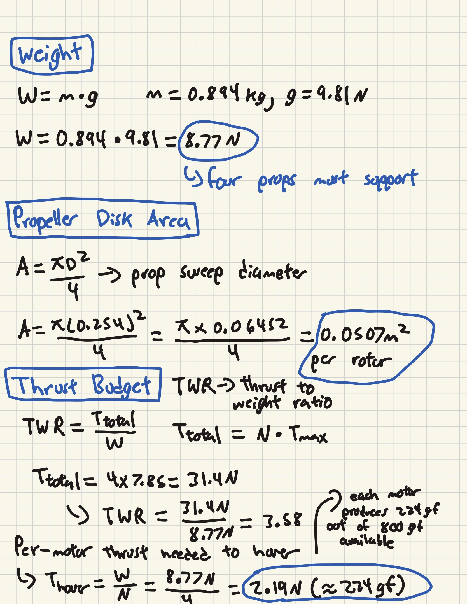
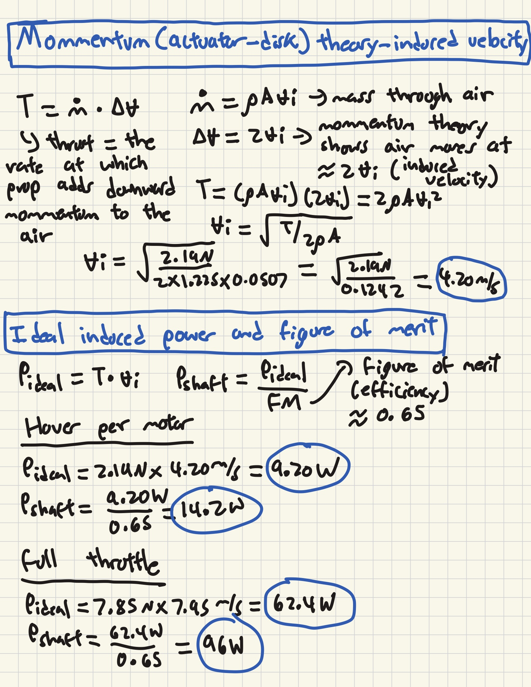
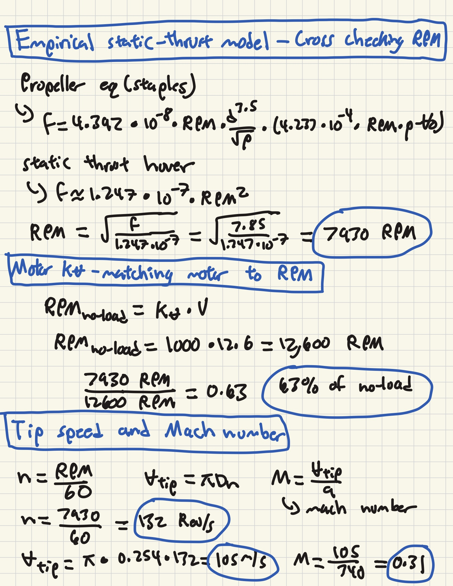
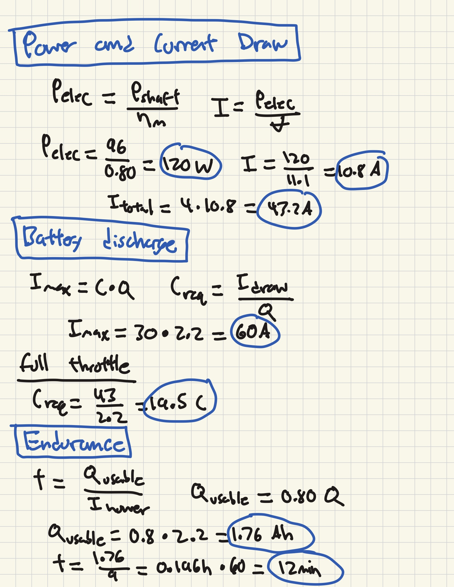
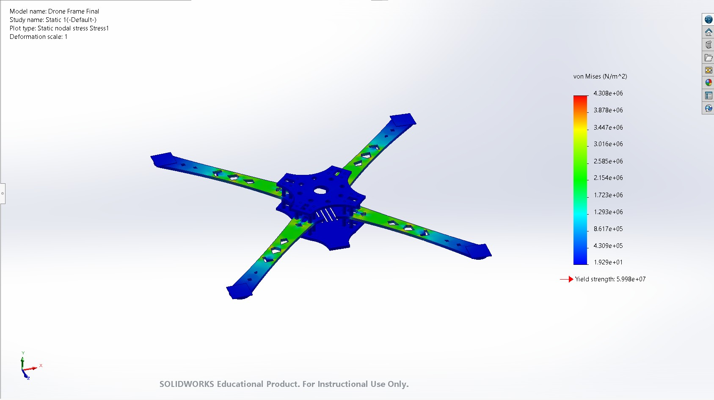
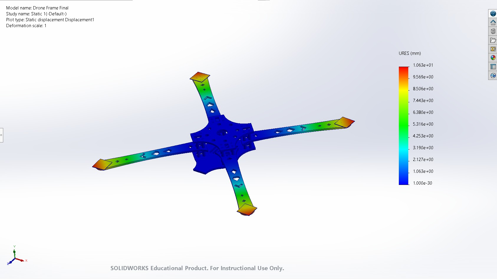
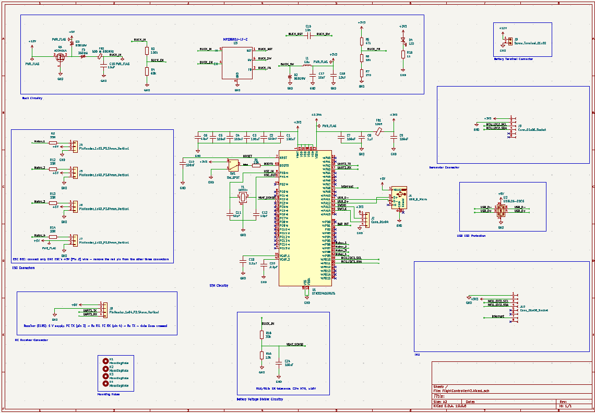
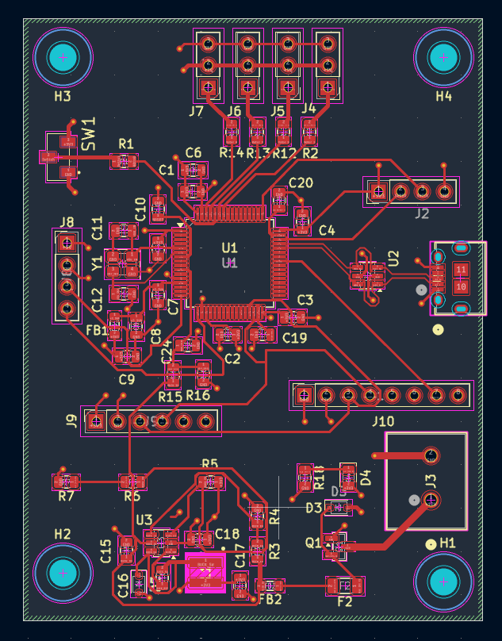

Project File // QUAD-01 · Personal Build
Custom Quadcopter
A fully custom quadcopter engineered from first principles — sizing the propulsion system by hand, validating the frame with FEA, designing a bespoke STM32 flight-controller PCB in KiCad, writing the flight firmware and a Kalman-filter state estimator from scratch, and tuning the PID loops on a tethered rig until it flew. Every layer, from the airframe to the control loops, was designed rather than bought off the shelf.
All-Up Mass0.894 kg
Thrust-to-Weight3.58 : 1
Hover Thrust / Motor2.19 N
MCUSTM32F405
Est. Endurance~12 min
Tip Mach0.31
01
First Principles
Propulsion & Power Hand Calculations
The whole design started on paper. I worked from the vehicle weight outward to prove — before buying a single part — that the motors, props, and battery could actually lift and sustain the aircraft.
Weight, disk area & thrust budget. Starting from an all-up mass of 0.894 kg, the weight is W = mg = 8.77 N, which the four props must support. Each 10-inch prop sweeps a disk of A = πD²/4 = 0.0507 m². With each motor producing up to ~7.85 N, total thrust is 31.4 N, giving a thrust-to-weight ratio of 3.58 — comfortably above the ~2:1 minimum for controllable flight. Splitting weight across four motors, each only needs 2.19 N (~224 gf) to hover, out of ~800 gf available — so hover sits near 28% throttle, leaving plenty of headroom.
Momentum (actuator-disk) theory. Modeling each rotor as an actuator disk, I solved for the induced velocity vᵢ = √(T / 2ρA) = 4.20 m/s, then the ideal induced power Pᵢdₑₐₗ = T·vᵢ. Dividing by a figure of merit (~0.65) converts that to real shaft power: about 14.2 W per motor at hover, rising to ~96 W per motor at full throttle.
Empirical thrust model & RPM cross-check. To sanity-check the propulsion pairing, I used an empirical static-thrust model to back out the required ~7930 RPM for the target thrust, then confirmed the motor's Kv·V no-load speed (12,600 RPM) put that at a healthy 63% of no-load. A tip-speed and Mach check gave a tip velocity of 105 m/s, or Mach 0.31 — safely subsonic, so no compressibility losses at the blade tips.
Power, current & endurance. Converting shaft power through the motor efficiency gives ~120 W electrical per motor, or 10.8 A each and ~43 A total at full throttle. The 3S 2200 mAh pack's discharge rating clears that draw, and using 80% usable capacity against the hover current yields an estimated endurance of about 12 minutes.

Weight · disk area · thrust budget

Momentum theory · induced power

Static thrust · RPM · tip Mach

Power · current · endurance
02
Structural
FEA Frame Validation
With the loads known, I validated the frame geometry in SolidWorks FEA, fixing the center plate and applying the motor thrust and landing loads out at the arm tips. The static stress plot showed a peak von Mises stress of about 4.31 MPa against a material yield of ~60 MPa — a factor of safety near 14×, so the frame is nowhere close to yielding. The displacement plot showed the expected behavior: the arms deflect most at their tips (peak ~10.6 mm at the exaggerated load case) while the central hub stays rigid, confirming stiffness is concentrated where the electronics and battery sit.

Von Mises · peak 4.31 MPa

Displacement · arm-tip deflection
03
Electronics
Flight-Controller PCB in KiCad
Rather than run an off-the-shelf autopilot, I designed my own flight controller in KiCad — a single board carrying every subsystem the aircraft needs. The schematic is organized into functional blocks:
At the center is an STM32F405 (Cortex-M4F) MCU — the brain — with a 16 MHz crystal, decoupling and VCAP capacitors, an SWD programming header, and BOOT0/reset circuitry. A buck-converter block steps the 3S LiPo (~11.1–12.6 V) down to regulated 5 V and 3.3 V rails and drives a power LED. A battery screw terminal feeds the pack in, and a 33k/10k voltage divider taps it into an ADC pin so the firmware can monitor pack voltage. Four ESC signal outputs (Motor 0–3) run on 3-pin headers with 33 Ω series resistors, wired so only a single ESC's BEC feeds the 5 V rail. An ELRS RC-receiver connects over UART (with TX/RX crossed). For sensing, an MPU-6050 IMU (3-axis gyro + accelerometer, with interrupt) and a BMP280 barometer sit on the I²C buses — the IMU for attitude, the barometer for altitude. A USB-micro port with a USBLC6 ESD-protection device handles programming and telemetry, and four mounting holes tie it to the frame.
The board layout places the STM32 and crystal centrally with tight decoupling, groups the ESC headers along one edge and the sensor headers on the I²C side, isolates the buck converter and its inductor in a corner, and keeps the mounting holes on the vehicle's bolt pattern. The populated board shows the final result: the STM32 reflowed in the center, the purple BMP280 barometer and blue MPU-6050 IMU on their headers, the screw terminal for battery power, and the pin headers broken out for the four ESCs and the receiver.

Schematic — functional blocks

Board layout
 Populated board — STM32, IMU, barometer
Populated board — STM32, IMU, barometer
04
Software
Flight Firmware From Scratch
With the board in hand, I wrote the flight firmware from the ground up on the STM32 — no autopilot stack underneath it. At boot the firmware brings up the clocks, I²C, UART, timers, and ADC, then initializes and calibrates the IMU and barometer. The core is a fixed-rate control loop that runs every cycle: read the gyro/accelerometer and barometer, fuse them into an attitude and altitude estimate, read the pilot's stick commands from the ELRS receiver over UART, run the control laws, and write motor commands out to the four ESCs via timer-generated PWM. The same loop watches pack voltage through the divider and enforces failsafes — for example, cutting motors if the receiver link drops — so the aircraft fails safe rather than flying away.
05
State Estimation
Kalman-Filter Sensor Fusion
A quadcopter can't be stabilized from raw sensors: the gyroscope is fast and smooth but drifts as its bias integrates over time, while the accelerometer gives an absolute gravity reference but is noisy and corrupted by the vehicle's own vibration and motion. I implemented a Kalman filter to fuse them into one clean attitude estimate — trusting the gyro for short-term rate integration while continuously correcting its drift against the accelerometer's long-term gravity vector, with the filter's gain balancing how much to believe each source based on their modeled noise. The result is a stable, low-latency estimate of pitch and roll (with the barometer folded in for altitude) that holds steady even under motor vibration — the foundation the control loops depend on.
06
Controls · Bring-Up
PID Tuning on a Tethered Rig
With a trustworthy attitude estimate, the last step was closing the loop. The firmware runs PID controllers that turn the error between commanded and estimated attitude into per-motor corrections — the proportional term reacting to current error, the derivative term damping the rate of change, and the integral term trimming out steady-state offset. To tune the gains safely I built a tethered test rig, anchoring the drone to heavy dumbbells so it could spool up and react to inputs without flying away. Working axis by axis, I raised each proportional gain until the response was crisp but not oscillating, added derivative to damp overshoot, and trimmed integral to hold attitude — until the aircraft settled quickly and rejected disturbances cleanly.
 Tethered tuning rig
Tethered tuning rig
07
Flight Ready
Finalized Drone
The finished quadcopter brings every layer together — an FEA-validated frame, a custom STM32 flight-controller PCB, firmware and a Kalman-filter estimator written from scratch, and hand-tuned PID loops — into a vehicle that hovers and maneuvers under its own control.
 Completed quadcopter
Completed quadcopter